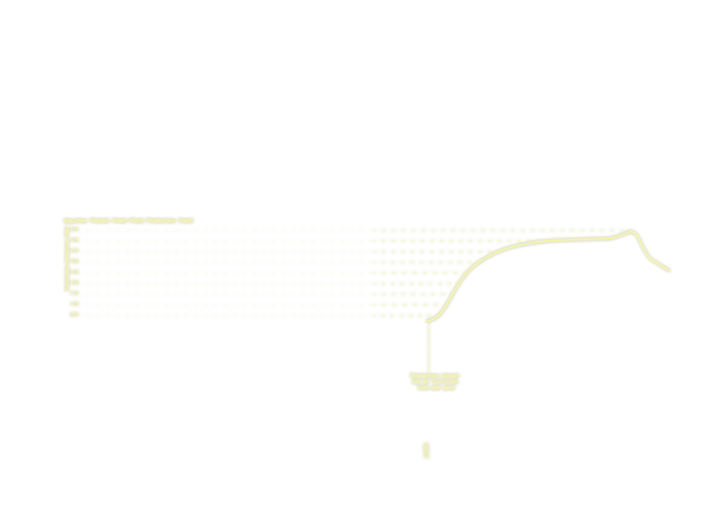
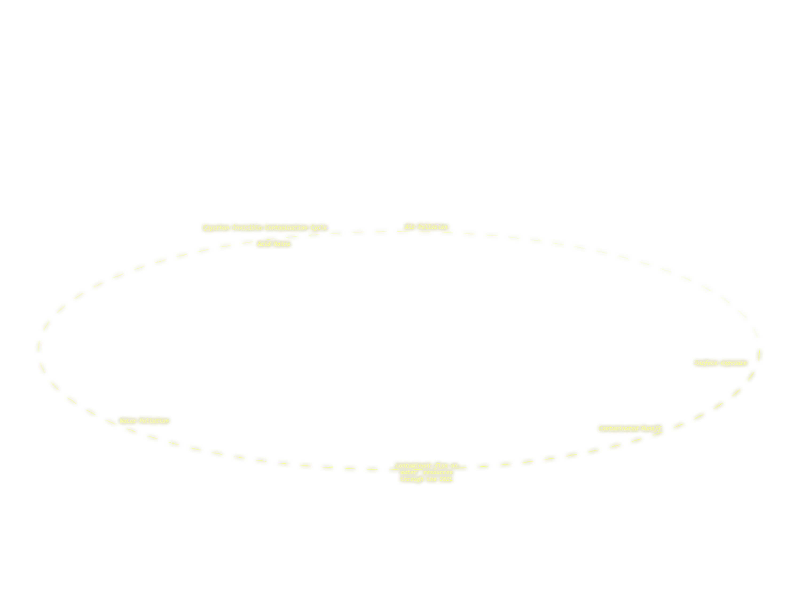
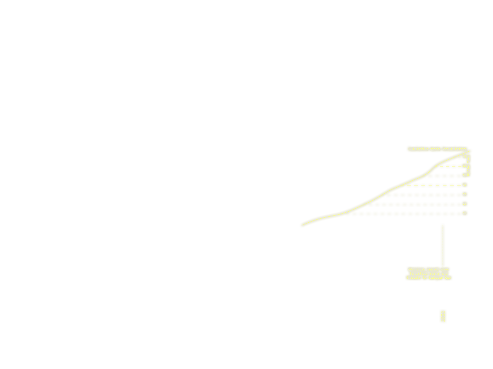
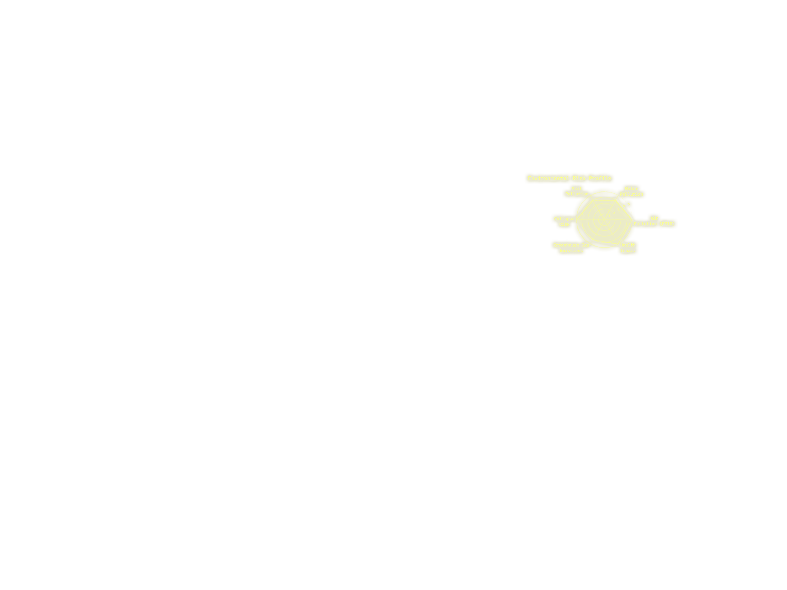
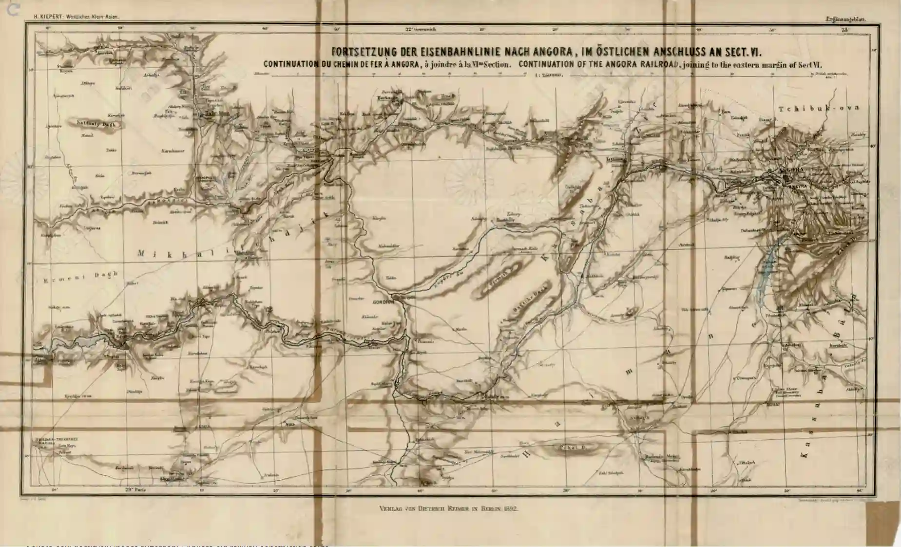
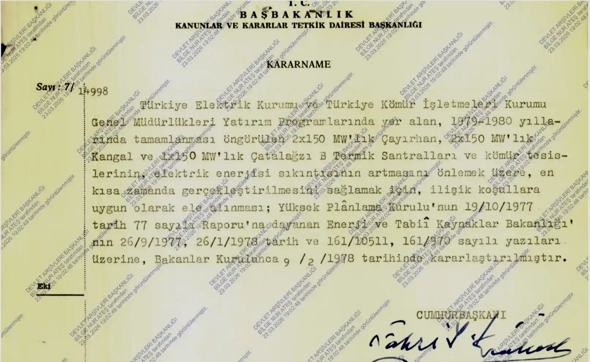
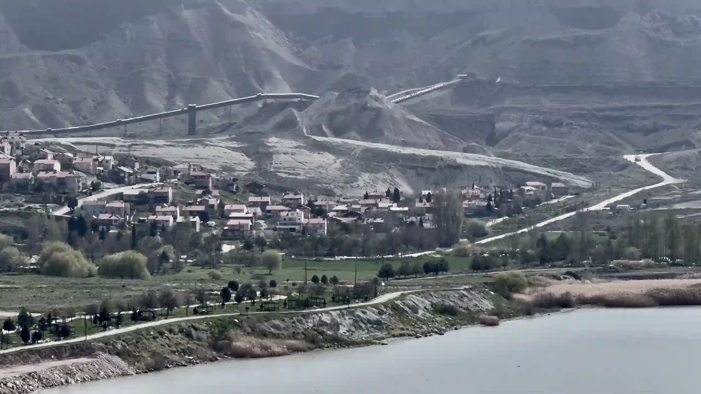
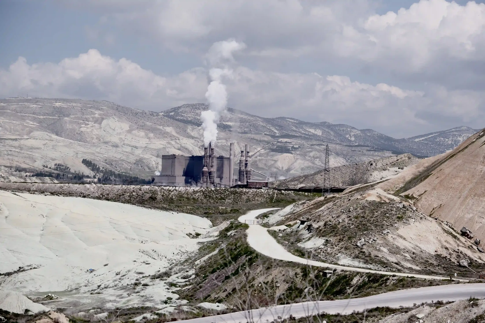

This collage functions as an interactive narrative interface designed to expose the hidden layers of Çayırhan’s industrial impact. Beyond a static illustration, the chronological milestones, graphs, and environmental vectors serve as digital nodes. Touching these nodes deploys informational panels containing archival data, research facts, and their environmental consequences. This interactive structure transforms the collage into a dynamic archive, confronting the viewer with the raw data of landscape devastation.
According to the Climate Change Policy and Research Association's report (2021), Çayırhan is a town in the Nallıhan district of Ankara that has transformed over time from a natural and agricultural settlement into a heavy industrial and mining center. Situated on the historical Silk Road, Çayırhan is 120-123 km from Ankara, 22 km from Beypazarı, and 35 km from Nallıhan. Located at an average altitude of 500 meters above sea level, the town is right next to the Sarıyar Dam, which opened in 1959, and the Nallıhan Bird Sanctuary, an internationally important Ramsar site home to a large number of different bird species.
Karaca et al. (2009) stated that the region is quite suitable for agriculture in terms of its geographical structure, morphological features, climate, and soil characteristics. Furthermore, a large number of the population earned their living through animal husbandry and farming. Grains such as wheat and barley were grown in arid lands, while vegetable, fruit, and viticulture activities were carried out in irrigated areas.
According to Prof. Suna Kili's book, titled Çayırhan, (1978) the discovery of a lignite coal deposit by Musa Murtazaoğlu in 1954 completely changed the fate of Çayırhan. The Çayırhan Thermal Power Plant, established in 1976 to convert this low-quality lignite into electricity, and the massive underground coal mining operations have transformed the region into a heavily industrialized town. Hundreds of employees at the plant have created significant economic activity in the area. In addition to the thermal power plant and mines, chemical plants extracting sodium sulfate and soda from underground also operate on the hills in the region.

Çayırhan is a town located in the Nallıhan district of Ankara, which has transformed over time from a natural and agricultural settlement into a center for heavy industry and mining. It is situated right next to the Sarıyar Dam and the Nallıhan Bird Sanctuary, an internationally recognized Ramsar site1 and home to numerous different bird species. Although the region has long relied on livestock farming and agriculture for its livelihood, the emergence of the mining sector has shifted its focus.2


The idea of constructing a large hydroelectric power plant on the Sakarya River was first proposed by the Electricity Works Survey Administration (EİEİ),3 but concrete steps were taken by the government in the early 1950s. Construction of the dam accelerated in the Çayırhan region along the Ankara–Nallıhan road during the first half of the decade. By November 1954, the project had reached its final stages, and expropriation processes in the region were intensified.2 Construction was completed in 1956, and the dam was officially inaugurated as one of Türkiye’s first large hydroelectric power plants (HPPs).4


The mining adventure, which began with the processing of lignite coal, whose presence in the region was discovered by chance, started to affect the local people with the establishment of small businesses. During the 1960s, the mining sector was gradually nationalized, reflecting an increasing role of the state in economic production and resource management. In 1967, it was purchased by the Turkish Coal Enterprises, and the TKİ Central Anatolian Lignite Çayırhan Enterprise was established. The Çayırhan Thermal Power Plant was also established under state custody in 1976 in line with these decisions.2 The power plant site was chosen to be close to the coal source as well as to Sarıyar Dam Lake, which would provide cooling water.1 The power plant and related mining areas attracted a wave of both qualified and unqualified migration from all over Türkiye, from Zonguldak to Van, transforming an Anatolian village into a mining town with labor unions.


The ash lake is one of the visible products of energy consumption materialised in the rural landscape. Tons of fly ash and slag produced by burning coal accumulate in these artificial basins, creating a new artificial soil layer, technosol, that does not naturally exist.
To prevent airborne damage from the large amounts of ash released from coal-fired power plants, this waste is usually dumped into pits or storage areas near the plant and submerged. Over time, rainwater and this wetting process combine to form large lakes. Soluble ions and minerals in the ash give the water clear turquoise, blue, and green hues. These vibrant colors attract visual attention and become focal points for living things in the surrounding area. However, the water in these lakes does not allow any life to thrive.5 In analyses conducted on different ash lakes by institutions such as TÜBİTAK and the Climate Change Policy and Research Association1, high levels of heavy metals harmful to human and environmental health have been detected in various ash lake waters. Therefore, entering or drinking their water is dangerous. A similar example of an ash lake can be found in Çayırhan.


This graph should be described as a speculative dataset prepared within the scope of the information obtained, rather than a transfer of actual data.8,9,10 In this context, when the historical production trend of the Çayırhan Thermal Power Plant is examined, it is seen that the plant reached an average annual gross production capacity of 4 TWh during the period when it was under private sector management.11 In addition, it is possible to infer that the cancellation of the additional lignite mining fields planned to feed the power plant and the Çayırhan B project may have played a role in the decline of the production trend after 2020.1


This cycle should be described as a cumulative dataset prepared within the scope of the information obtained.1,12 The Invisible Contamination Cycle takes its first step with the release of heavy metals from industrial waste or power plants into the environment. These heavy metals, accumulating in the soil, can be transported thousands of kilometers away by atmospheric transport, even to polar regions untouched by industry. These toxic particles, which float in the air, return to the soil with rain, cause seepage through the soil, and are invisible to the naked eye, have become an integral part of the water cycle. Thus, they enter into an inseparable relationship with the surrounding ecosystem.

According to the Nallıhan Bird Sanctuary Report of the Climate Change Policy and Research Association (2021), the facility in Çayırhan was carrying out open dumping in the ash lake until June 2021.1
The graph created should be described as a speculative dataset prepared within the scope of the information obtained, rather than a presentation of actual data.8,12,13,14 The curve, which started from zero with the beginning of industrial production in 1980, shows the weight of industrial waste settling on the landscape, exceeding the threshold of tens of millions of tons today.


The cumulative impact of the Çayırhan Thermal Power Plant and surrounding industrial activities on the environment, in light of available information, presents a chronic threat that simultaneously and irreversibly transforms all layers of the ecosystem; air, soil, water, and geological structure.1,14,15 The conflict between nature and the man-made artificial environment has engendered a tragic landscape transformation, a technosol formation, in this region, where technocratic planning objectives completely disregard ecological limits. In light of resources and empirical data, a multidimensional threat graph generated by this environmental risk profile can be constructed, as shown in the figure.




